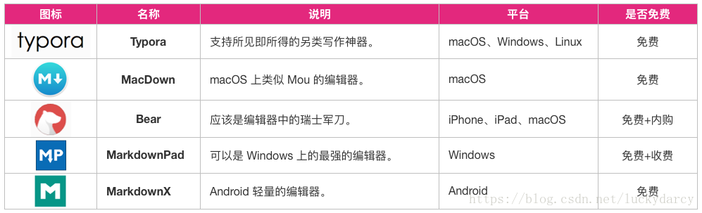

第1节：是什么
是什么？ 在我认识 GitBook 之前，我已经在使用 Git 了，毋容置疑，Git 是目前世界上最先进的分布式版本控制系统。
我认为 Git 不仅是程序员管理代码的工具，它的分布式协作方式同样适用于很多场合，其中一个就是写作（这会是一个引起社会变革的伟大的工具！）。所以在我发现 GitBook 之前，实际上我已经无数次想象过它的使用场景了。
咋一看 GitBook 的名字，你可能会认为它是关于 Git 的一本书。而当你有所了解之后，你也许会认为它是一个使用 Git 构建电子书的工具。其实不然，GitBook 与 Git 的关系，就像雷锋塔和雷锋那样，没有一点关系！
实际上，GitBook 是一个基于 Node.js 的命令行工具，支持 Markdown 和 AsciiDoc 两种语法格式，可以输出 HTML、PDF、eBook 等格式的电子书。所以我更喜欢把 GitBook 定义为文档格式转换工具。 所以，GitBook 不是 Markdown 编辑工具，也不是 Git 版本管理工具。市面上我们可以找到很多 Markdown 编辑器，比如 Typora、MacDown、Bear、MarkdownPad、MarkdownX、JetBrains’s IDE（需要安装插件）、Atom、简书、CSDN 以及 GitBook 自家的 GitBook Editor 等等。

但 GitBook 又与 Markdown 和 Git 息息相关，因为只有将它们结合起来使用，才能将它们的威力发挥到极致！因此，通常我们会选择合适的 Markdown 编辑工具以获得飞一般的写作体验；使用 GitBook 管理文档，预览、制作电子书；同时通过 Git 管理书籍内容的变更，并将其托管到云端（比如 GitHub、GitLab、码云，或者是自己搭建的 Git 服务器），实现多人协作。
实际上，GitBook Editor 对于新手来说是个不错的选择，它集成了 GitBook、Git、Markdown 等功能，还支持将书籍同步到 gitbook.com 网站，使我们可以很方便地编辑和管理书籍。但是不幸的是，GitBook Editor 的注册和登录需要翻墙，即便注册成功了也可能登录不上，似乎是因为网站最近在升级。
因此，我推荐，也是我目前使用的搭配是 GitBook + Typora + Git。